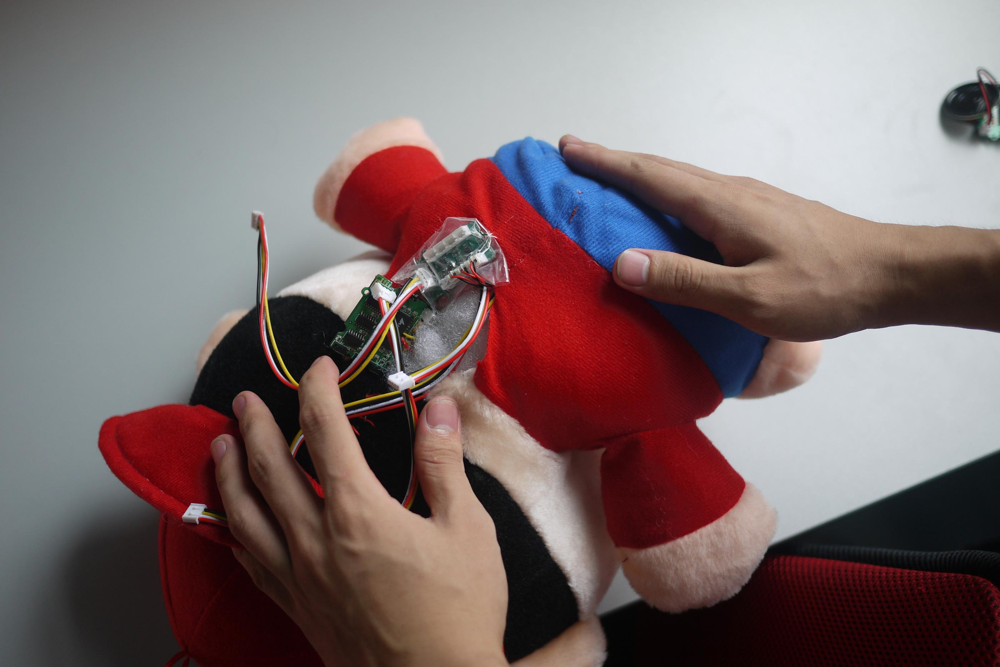

Do you want your gift say "hello" when your friends embrace it? Do you want to trick your friend at a party for fun? Well, the Toy Bundle can satisfy you. It can make your toy come alive and send your words to your friends. Gifts or party will need this interesting toy.
Hardware Installation:
The whole system structure can be described by the above picture: when your finger approaches or touches the touch sensor, the I2C Touch Sensor will send a signal to the Seeeduino. After being processed, the Seeeduino will send a signal to the Sound Recorder though the 4-pin Grove interface. Based on what signals it receives, the Sound Recorder will play different sound.
At first, choose the "record" option (picture1) and then push the "section" button (picture2) to record. Your voice will be stored in the channel you choose. It can be something like "hello", "good night", or even a scream, depending on your purpose. You can hear your recording if you choose the "Play" option and then press the related button. Note that you can record no more than 4 sentences and the length of each channel is limited by the sample rate which is determined by the resistance. When you record your voice, you must not release the button until you finish recording.
| Picture1
|
Picture2
|
For more information about sound recorder, you can check out Twig - Sound Recorder v0.92b
Connect your sensors to the Seeeduino board, and hide them into the toy wherever you want. You have to be sure that your sensors could be easily touched by people. You can see from the picture where I hid my sensors:

For more information about the touch sensors, you can check out Twig - I2C Touch Sensor v0.91b
Download the code to your board. Here is the procedure:
Here is an explanation: The I2C Touch Sensor detect the signal from finger feelers every several milliseconds. If the signal comes, it will be coded as pulse signals. According to these signals, the Arduino board will make the Sound Recorder module play the appropriate sound.
After the installation is done, you should test it. You will hear different sounds when touching different sensors. For example, I hid the sensors in CrayonXiaoxin’s hands and bottom. When you shake hands with him, he will say, "hello!". If you slap his bottom, he will cry out, "help!". If you want to scare somebody, just record some terrible voice and send this toy to them. You can imagine how fun it is. Does it sound fun? Stop hesitating, just take it home!